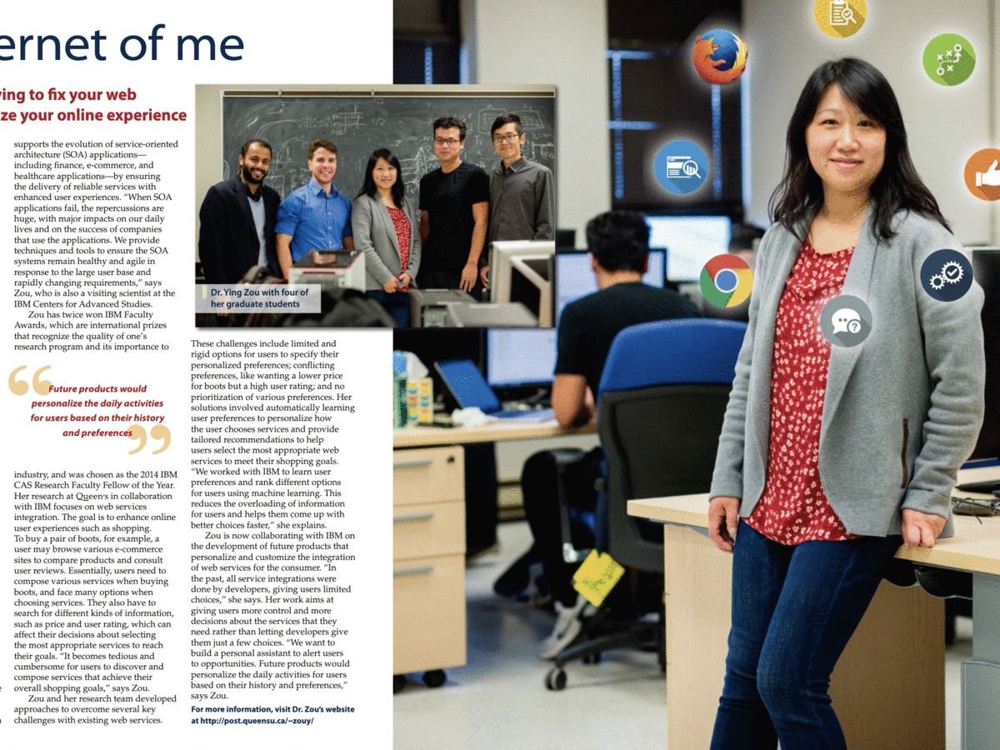

Software Evolution & Analytics Lab (SEAL)
|
The Software Evolution and Analytics Lab (SEAL) aims to provide the approaches and techniques to support the design, development and evolution of the large-scaled software systems so that such systems remain healthy, agile and reliable in response to rapidly changing requirements. We analyze various large-scaled data (e.g., software projects data, IoT data and texts) by applying machine learning approaches to predict important outcomes in order to help practitioners improve their productivity in the software development and operational process. Some example research is introduced by the article published in The Complete Engineer by the Faculty of Engineering and Applied Science at Queen’s University (Fall/Winter 2017 pp. 6-7). Research Interests:
Latest News: |
